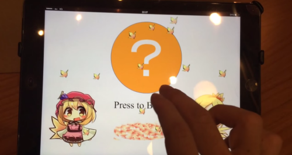
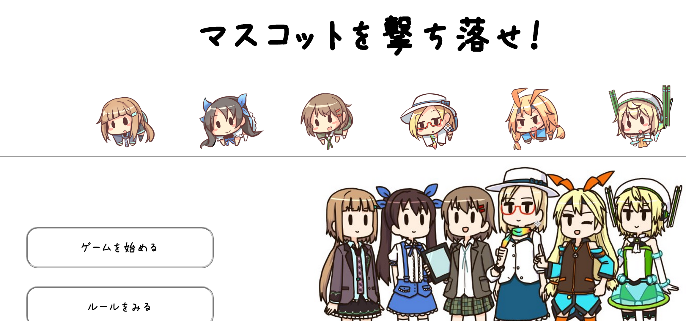
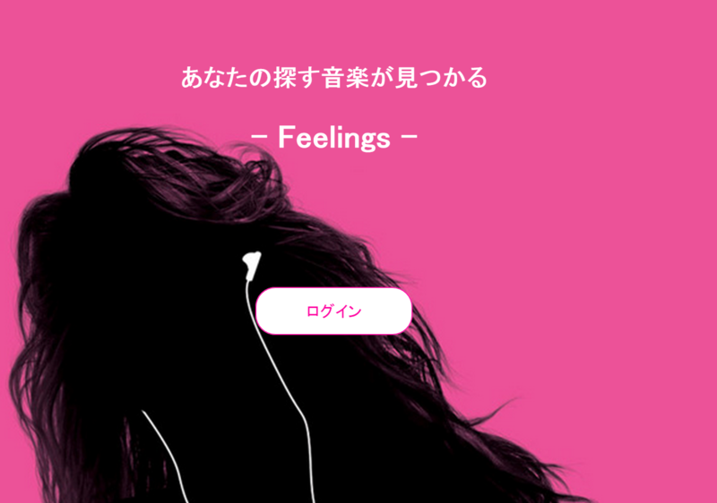
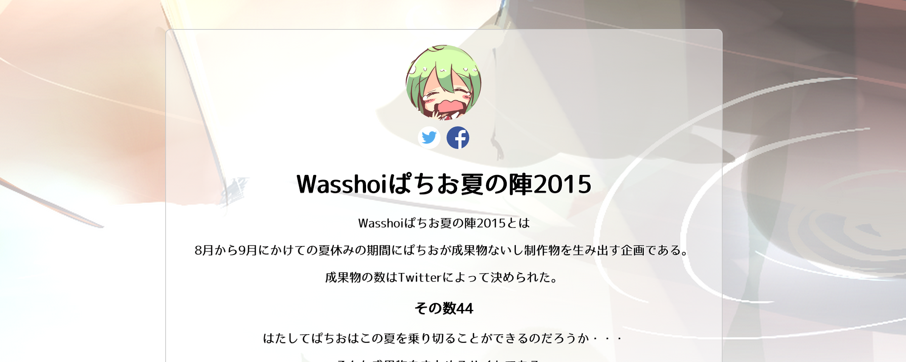

今までやったやつ


Yonkoma
Twitterを利用したリレー4コマ漫画投稿サイト。 4コマ漫画をフォロワー達で完成させよう！ チームで開発を行い、主にデザインHTML,CSS担当しました。


Feelings
FeelingsTwitterログインによって利用できるサービスです('ω')
自分の呟きからネガティブなのか？ポジティブなのか？を判定し、それに合うであろうyoutubeの動画が紹介されます！
（この紹介される動画は全部ユーザーによるオススメなので変なのが出ても僕の責任じゃないゾ☆）
